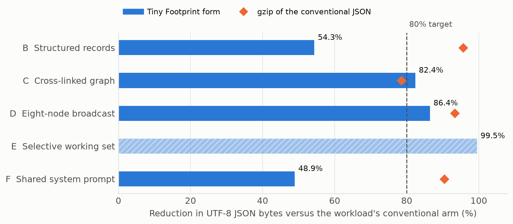
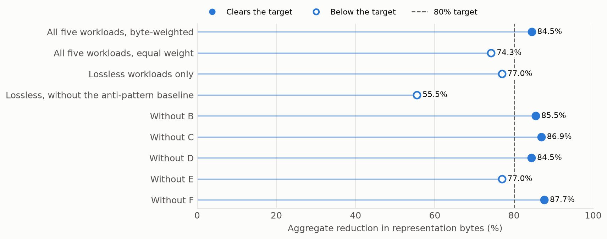
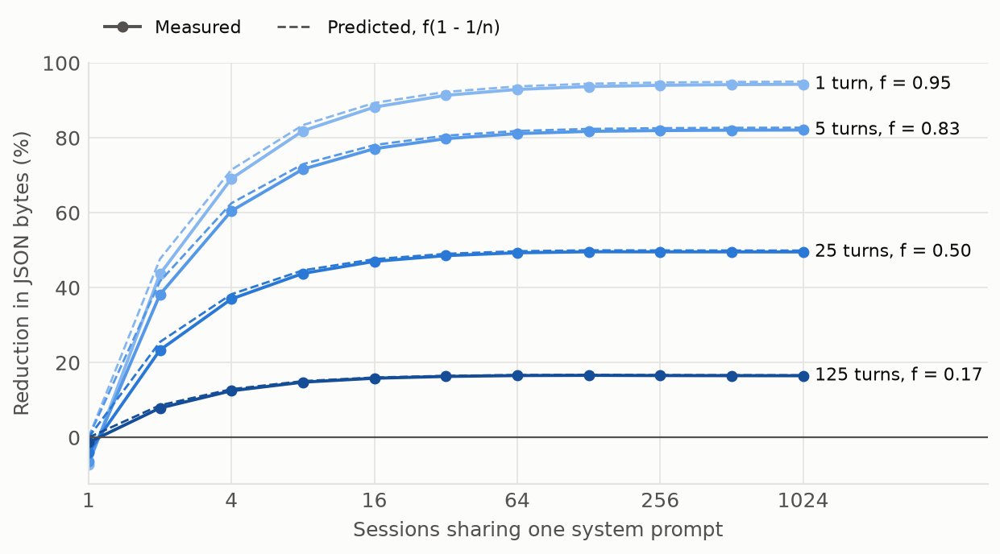
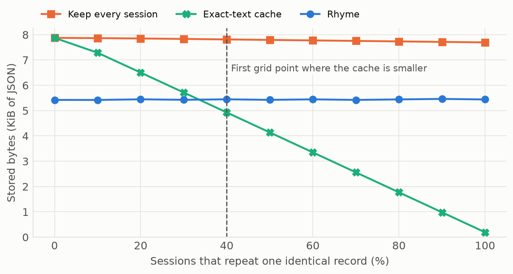
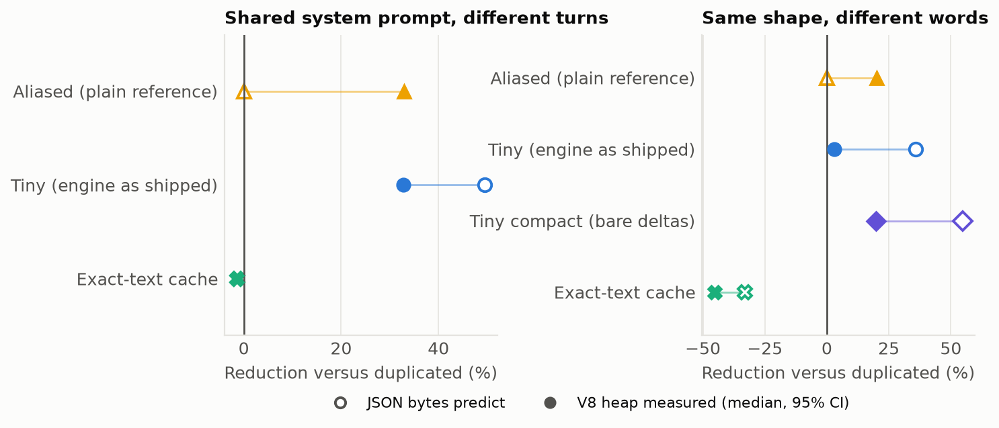
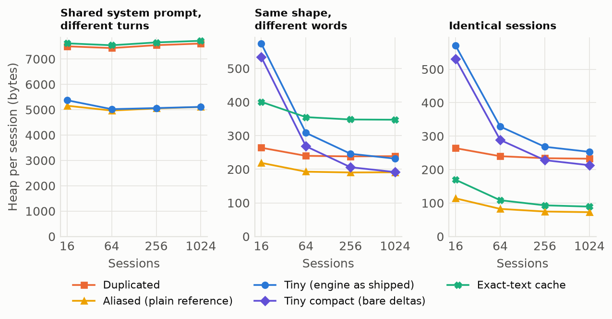
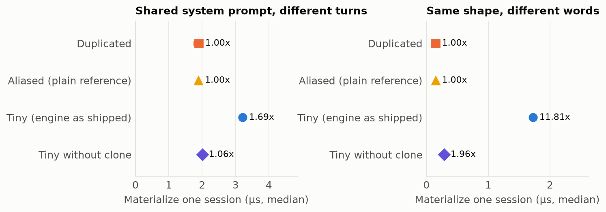
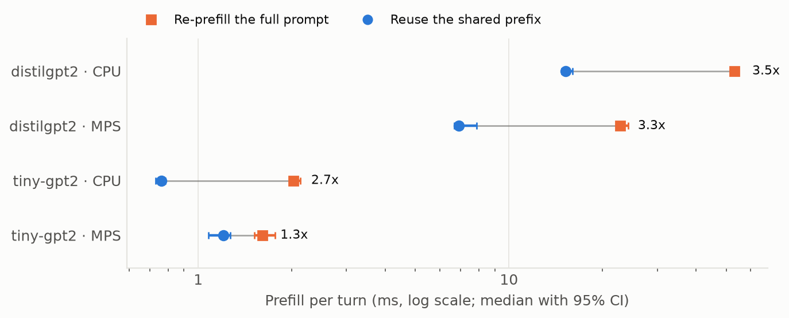
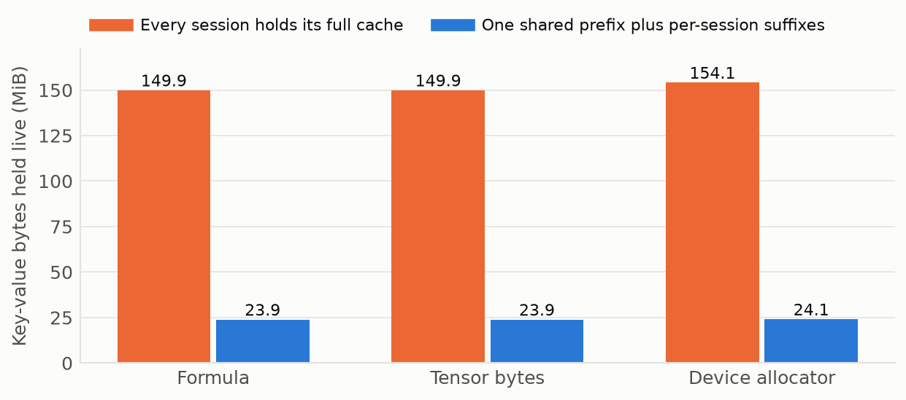
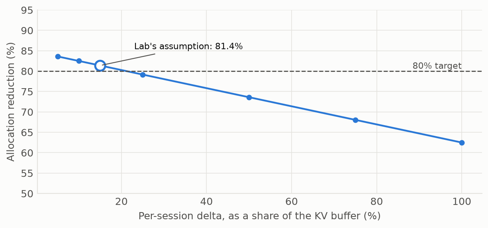

1 Abstract
Software that shares state across AI serving sessions promises less
memory and lower latency by storing a common pattern once and keeping
only each session’s differences. The Tiny Footprint Workstation is one
such kit. Its published evidence includes an aggregate reduction of
84.5% in representation bytes and device measurements from a laptop GPU.
This study rebuilds that evidence as one reproducible pipeline with
three tiers: byte accounting that is identical on any machine, live
memory and latency measured on Apple M4 Pro, and real forward passes
through distilgpt2 and tiny-gpt2.
The published aggregate reproduces to every digit, at 84.5%. Whether it clears the 80% gate depends on selection and weighting: it is 74.3% with equal weights, 77.0% over the lossless workloads, and 55.5% once a baseline built as a deliberate anti-pattern is also removed. Serialized bytes overstate memory. For sessions sharing a system prompt, JSON predicts a reduction of 49.5% and the live V8 heap shows 32.8%, while a plain object reference reaches 32.9% with no engine. For sessions sharing only a shape, JSON predicts 35.9% and the shipped engine’s heap shows 4.2%; a tighter encoding of the same idea reaches 20.9%, level with plain references at 20.1%. Materializing one session takes 1.69× to 11.81× the duplicated store’s time, falling to 1.06× and 1.96× without one cloning call. On real models, reusing a shared prefix speeds prefill by 1.34× to 3.50×, with last-position logits within 1.4e-4 of a full prefill on the model where a wrong cache is detectable, and leaves decode at 0.98× to 1.03×. Key-value residency falls 84.4% on the device allocator against 84.1% predicted, and 27.3% once model weights are counted. A production prefix cache provides the same mechanism.
Two published figures do not survive as stated. The 81.4% GPU allocation reduction is arithmetic on requested buffer sizes and an assumed delta, and it reproduces with no GPU. The 1.17× training speedup becomes 1.00× to 1.03× once the arms are warmed up and interleaved. A simulated advantage for rhymes over a prefix cache, 34.3% of KV memory on an H100, rests on applying a JSON byte fraction to KV tensors. On real tensors, with 12.5% of tokens changed, 14.6% of KV cells repeat, and resuming from the other prompt’s cache moves logits by 3.72. This study also discloses and corrects a defect through which the kit reported a stored laptop receipt as a fresh result on hosts with no GPU. The evidence supports prefix sharing as a real, bounded memory optimization. It does not establish a reduction of 80% in device memory for AI serving.
Keywords: AI serving; memory efficiency; key-value cache; prefix caching; benchmarking methodology; reproducible research.
2 Introduction
Serving many sessions from one language model repeats a large amount of state. System prompts, tool schemas and policy text recur across requests, and the key-value (KV) cache that holds a model’s attention state grows with every token. Kwon et al. (2023) identify KV-cache memory as a limit on batch size and report that fragmentation and redundant duplication waste it. Prefix sharing is now a mainstream response: SGLang reuses KV cache through RadixAttention (Zheng et al. 2023), and Prompt Cache reuses attention states across prompts through an explicit schema of reusable segments (Gim et al. 2023).
The Tiny Footprint Workstation is a commercial developer kit from FractiAI that addresses the same pressure with a broader idea. Its engine, Tiny Gateway, organizes state around Rhyming Templates: a rhyme matches organization, meaning the same fields holding the same kinds of values, even when the words differ. A template is stored once and each session keeps only what differs. The vendor’s positioning appears in fig. 1. The kit’s headline is less memory, lower latency and more AI performance.

Claims of this kind are easy to state on a denominator that flatters them. A size reduction may be measured on serialized text and not on memory, against a baseline nobody would deploy, or on one machine and then generalized to another. An earlier audit of this repository narrowed its public language to what the labs measured. This study takes the next step and measures the claims again, on one pipeline that a reader can rerun.
2.1 A defect this work corrected
Before this work, the kit’s benchmark command read lab receipts from
disk whether or not the lab had just run. On a machine with no NVIDIA
GPU the lab could not start, the stored receipt was read anyway, and the
suite reported every experiment as passing. The customer report then
named the NVIDIA GeForce GTX 860M as the device under test, on hardware
that was not that device. Such a run also overwrote tracked receipts.
The README promised results from the reader’s own machine, so this was a
defect and not a matter of interpretation. Labs now report only what ran
in the current invocation, with not_run as an outcome
distinct from pass and fail. On the host used here the corrected suite
reports a verdict of incomplete: twelve experiments pass,
zero fail and three did not run, and it withholds the engine pin.
FractiAI’s latest release again reuses a stored GPU receipt by default,
now labelled as cached, and still counts it as a pass, so this study’s
code keeps the corrected behaviour.
2.2 Contributions
This study makes four contributions.
- It separates evidence into tiers that cannot be confused: byte accounting identical on any machine, measurements bound to one named host, simulations, and historical receipts from other hardware.
- It reproduces the published byte results exactly, then shows how far they depend on workload selection, weighting and baseline.
- It measures what the byte results stand in for: the live V8 heap, resident set size, materialization latency, and KV residency on real models with an output-equivalence check.
- It evaluates each public claim against that evidence in a computed ledger, sec. 10, whose statuses change if the data change.
Every study value in this document, including those in tables, captions and alternative text, is injected from a receipt at build time. A gate fails the build if a study value is typed into the authored source (sec. 9).
3 Formal model
The results below turn on a few simple identities. Stating them first makes clear which outcomes follow from arithmetic and which needed a measurement.
Definition 1. For a conventional representation of size \(B\) and an alternative of size \(T\), the reduction is \(R = 1 - T/B\). A representation is lossless for a workload if every original record can be rebuilt from it exactly.
Proposition 1. If the shared bytes are stored once with no overhead, then \[R(n) = f\left(1 - \frac{1}{n}\right).\qquad{(1)}\] Hence \(R(n) < f\) for every \(n\), and a target reduction \(\tau\) is reachable only if \(f > \tau\).
To see this, take \(B = n(S+D)\) and \(T = S + nD\). Then \(1 - T/B = S(n-1)/\bigl(n(S+D)\bigr)\), which is eq. 1. Two consequences matter in practice. More sessions help only up to the ceiling \(f\). And because \(D\) grows with every turn of a conversation while \(S\) does not, \(f\) and therefore the available saving fall as sessions age.
Definition 3. Across workloads with sizes \(B_i\) and \(T_i\), the byte-weighted aggregate is \[A = 1 - \frac{\sum_i T_i}{\sum_i B_i} = \sum_i w_i R_i, \qquad w_i = \frac{B_i}{\sum_j B_j}.\qquad{(2)}\]
By eq. 2, the aggregate is a weighted mean in which each workload counts in proportion to its baseline size. A workload’s size is an arbitrary parameter of that workload, so the aggregate can be moved without changing any individual result.
For a transformer with \(L\) layers, \(H\) attention heads, head dimension \(d\) and \(s\) bytes per element, key and value tensors per layer give \(k = 2LHds\) bytes per token, an accounting the real-model lab checks against the tensors themselves. With a prefix of \(P\) tokens shared by \(n\) sessions that each add \(Q\) tokens, \[K_{\mathrm{dup}} = n(P+Q)k, \qquad K_{\mathrm{shared}} = (P+nQ)k,\qquad{(3)}\] which is Proposition 1 with \(S = Pk\) and \(D = Qk\). Model weights of \(W\) bytes are resident under both designs, so the reduction in total resident memory is \[R_W = 1 - \frac{W + K_{\mathrm{shared}}}{W + K_{\mathrm{dup}}}.\qquad{(4)}\] The weights dilute the saving, and they dilute it most where the KV cache is small relative to the model.
4 Methods
4.1 Evidence tiers
- Deterministic. Byte accounting, with no clock and no description of the host. The receipts are byte-identical on repeated runs.
- Measured. Live memory and wall-clock time on one named host, in isolated processes. The values are expected to differ on other machines.
- Simulated. Arithmetic over a published hardware profile. No device is touched.
- Historical. Receipts recorded on another machine. They are bound by hash and reported as evidence about that machine on that date, never as a current run.
4.2 Host
Measurements ran on Apple M4 Pro with 14 logical cores and 24 GiB of memory, under darwin 27.2.0 on arm64, with Node v26.13.0 and V8 14.6.202.34-node.40. Real-model runs used Python 3.13.17, PyTorch 2.15.0 (Paszke et al. 2019) and Transformers 5.22.1 (Wolf et al. 2020). The machine was not idle: other work ran concurrently, and the one-minute load average across the measured runs was 4.77 to 18.71. Receipts record the load at the start and end of each run.
4.3 Deterministic tier
The study measures the kit at upstream commit 733b48e
(v1.3 companions). The registered workloads are the suite’s own.
Workload B holds structured records, C a cross-linked graph, D one story
broadcast to eight nodes, E a lattice of vectors against one request’s
working set, and F chat sessions sharing a system prompt. All use seed
20261103, with gateway round trips also checked under 202611032, and
sizes are UTF-8 JSON bytes.
The suite’s own exactness checks are partial, so this tier adds a full round trip of every record in B, C, D and F. To test the aggregate, it recomputes eq. 2 with equal weights, over lossless workloads only, without the baseline of workload C, and leaving out each workload in turn. That baseline embeds full copies of both nodes in every edge, which the suite’s source describes as a conventional anti-pattern. Workload C is also compared with a plain normalized graph whose edges refer to nodes by id, with no template engine. As a yardstick for how much redundancy the bytes contain, each lossless workload’s conventional JSON is compressed with gzip.
Proposition 1 is tested by running workload F’s encoding across a grid of 11 session counts up to 1,024 sessions and 1, 5, 25 and 125 turns per session. The rhyme is compared with an exact-text cache across a grid of duplicate shares from 0% to 100%, for 40 same-shaped sessions.
4.4 Measured tier
JSON bytes do not see object references, shared hidden classes or allocator behaviour. V8 shares object shapes through hidden classes (Bruni 2017), so identical keys in many objects are not stored many times. The measured tier therefore reads the heap itself. Every store starts from per-session wire text, as a server receiving request bodies would, so nothing shares memory by accident. The stores are:
- Duplicated: one fully parsed object per session.
- Aliased: parsed, then shared fields point at a single object. This is an ordinary JavaScript reference and the baseline a template engine must beat in memory.
- Tiny: one registered template plus per-session expressions, using the shipped engine.
- Exact-text cache: one parsed object per distinct wire text.
Two ablations separate the idea from this implementation of it.
Tiny compact keeps the template and bare deltas without the
engine’s per-session wrapper. Tiny without clone materializes
from the shipped store without structuredClone.
Heap. Each measurement runs in a fresh process with
garbage collection exposed. The whole build runs first and is discarded,
so that lazily compiled code and tier-up are not charged to whichever
store happens to allocate them. The heap is read on both sides of the
build after collecting until it stops shrinking. As a check on the
instrument, a store’s total heap must grow with its size, and
verification enforces this. Tier-up allocates code in the same heap from
a background thread, so these processes run with --no-opt,
--no-maglev, --no-sparkplug and
--single-threaded-gc: retained object layouts do not depend
on the tier, and the reading then holds data alone. Latency and RSS keep
normal settings, because they describe a realistic process. The design
is three workloads across 16, 64, 256 and 1,024 sessions with 21
processes per cell, 1,218 in all including controls, run in seeded
random order so that drift on the host spreads across conditions (Mytkowicz et al.
2009).
Controls. An empty control allocates nothing and a known control allocates a packed array of computable size. They measure the instrument itself.
Resident set size. Reading RSS after preparing sessions on the JS heap is confounded, because V8 keeps committed pages after collecting garbage. This design holds all wire text in one off-heap buffer and ingests sessions one at a time. It runs at 16,384 sessions, where the differences resolve, with 11 processes per store.
Latency. Materialization is the time to turn one stored session back into its full request text. Before any timing, every session is checked to reconstruct to its original wire text exactly. Each of 15 independent processes per condition warms up for 4,000 operations and then times 4,000 operations in batches of 16, at 64 sessions.
Statistics. The independent unit is the process (Kalibera and Jones 2013; Georges et al. 2007). Point estimates are medians, with quantiles by linear interpolation (Hyndman and Fan 1996). Intervals are percentile bootstrap at 95% confidence (Efron and Tibshirani 1993) with 4,000 resamples and seed 20261105; neither assumes normally distributed timings (Hoefler and Belli 2015). Ratios use independent resampling of numerator and denominator. The real-model lab runs one process per combination, so its intervals resample per-trial medians and describe repeatability within that process. All comparisons are descriptive.
4.5 Real-model lab
The lab runs four combinations of distilgpt2 and
tiny-gpt2 on CPU and MPS, with weights pinned to fixed
revisions and held as float32. The models belong to the
GPT-2 family (Radford et al.
2019), whose attention layout is what eq. 3 describes. tiny-gpt2 repeats the
original lab’s choice. Its KV cache is too small to measure memory, so
distilgpt2 gives a measurable one. Their shared prefixes
are 256 and 512 tokens, with eight sessions of two turns, 21 suffix
tokens and eight decoded tokens.
The original lab tokenized its arms differently, ran one arm entirely before the other, and did not check output equivalence. This lab builds both arms from the same token ids, interleaves them in seeded random order within each turn across 15 trials, and compares both last-position logits and greedy tokens between arms, turn by turn. A control repeats this with a cache built from the reversed prefix, to test whether the check can detect a wrong cache. A second control tests a rhyme: a prompt that keeps all but 12.5% of its tokens is compared with the original cell by cell, and the lab resumes from its cache. Training arms are warmed up and alternated in the same way. The “with” arm is charged once per trial for prefilling the shared prefix.
KV residency holds every session’s cache live and reads three accountings: eq. 3, summed tensor sizes, and the device allocator where one exists. “With Tiny Footprint” in this lab means reusing a shared prefix, which is what a production prefix cache does, so the lab tests prefix sharing and not rhyming.
4.6 Simulated and historical evidence
The roofline applies eq. 3 and eq. 4 to a published profile of the NVIDIA H100
SXM 80GB (NVIDIA Corporation
2026) and a model with the shape of Llama 2 7B (Touvron et al. 2023), with 16 sessions,
2,048 prefix tokens and 128 suffix tokens. The historical receipts come
from the NVIDIA GeForce GTX 860M. The GPU lab needs that vendor’s
runtime, so on this host it records not_run with reason
nvcuda_unavailable, and its allocation figure is recomputed
with no device.
5 Results
5.1 The published byte results reproduce exactly
Tier: deterministic. All workload reductions match the historical receipt to every digit, and the aggregate reproduces at 84.5%. The values are in tbl. 1 and fig. 2. Full round trips hold for every record in the lossless workloads. Workload E is different in kind: its working set contains 4 of 768 vectors, so its 99.5% reduction is the size of one request’s closure compared with the whole lattice, and it cannot reconstruct the rest.
| Workload | Conventional bytes | Tiny bytes | Reduction | gzip | Round trip |
|---|---|---|---|---|---|
| B: Structured records | 76,020 | 34,859 | 54.1% | 95.8% | 500 of 500 exact |
| C: Cross-linked graph | 1,243,896 | 219,496 | 82.4% | 78.5% | 600 of 600 exact |
| D: Eight-node broadcast | 44,617 | 6,061 | 86.4% | 93.3% | 8 of 8 exact |
| E: Selective working set | 780,653 | 4,050 | 99.5% | n/a | not lossless: holds 4 of 768 |
| F: Shared system prompt | 191,496 | 97,926 | 48.9% | 90.4% | 40 of 40 exact |

gzip exceeds the template reduction on three of four lossless workloads. The redundancy is real, and general-purpose compression also finds it, at the cost of not being usable in place.
5.2 The aggregate depends on selection and weighting
Tier: deterministic. Workloads C and E together supply 86.6% of the baseline bytes, so by eq. 2 they dominate the aggregate. The alternatives in fig. 3 recompute it. Equal weighting gives 74.3%. Removing E, which is not lossless, gives 77.0%. Removing C’s anti-pattern baseline as well gives 55.5%. The 80% gate is cleared under the published weighting and under four of five leave-one-out variants; the variant below it leaves out E.

Workload C’s baseline deserves separate attention. Moving from embedded node copies to edges that refer to nodes by id, with no template engine, saves 83.7%. Against that normalized graph, the Tiny form is 8.0% larger, because each edge carries a template reference and an index. In this workload the saving comes from normalization.
5.3 Saving is bounded by the shared fraction
Tier: deterministic. The test of Proposition 1 on the real encoding is in fig. 4. Measured reductions track the closed form within 7.3 points at every grid position, the gap coming from a small fixed overhead visible at low session counts. The ceiling is the practical result: at 125 turns per session the reduction saturates near 16.5% regardless of how many sessions share the prompt, against 94.3% at one turn.

5.4 The exact cache overtakes the rhyme as duplicates grow
Tier: deterministic. With 40 same-shaped sessions and different words, the rhyme stores 5,554 bytes against 8,064 for an exact-text cache, 31.1% less. When all sessions repeat the same words, the cache stores 198 bytes and the rhyme 5,572. The sweep in fig. 5 fills in between: the cache is already smaller at 40% duplicates on the tested grid. Reconstruction matched at every point.

5.5 The instrument reads what is allocated
Tier: measured. The empty control read 144 bytes across 21 processes, with a maximum of 144. The known control read 1,600,192 bytes against 1,600,000 expected, an error of 0.01%. In 56 of 56 cells of the design, every process read the same number, so heap intervals are narrow or empty. A narrow interval shows that a reading repeats, and a systematic error would repeat as well. That is why the controls, and a check that total heap grows with store size, carry the weight here.
5.6 JSON bytes overstate live memory
Tier: measured. The comparison of what JSON predicts with what the heap shows at 1,024 sessions is in fig. 6 and tbl. 2. With a shared system prompt, JSON predicts a reduction of 49.5% and the heap falls 32.8%, because in a live heap each session’s turns carry object overhead that serialized text does not. A plain object reference reaches 32.9%, with JSON unable to see any saving from it at all. Over this workload the template engine and an ordinary reference hold the same memory, within 0.07% of each other.

With the same shape and different words, which is the case rhyming exists for, the gap is larger. JSON predicts 35.9% and the heap shows 4.2%. V8’s hidden classes already share the repeated keys, and the engine adds a wrapper object and nested delta objects per session. Removing the wrapper recovers most of the difference: the compact ablation reaches 20.9%, level with the aliased store at 20.1%, because each session then holds only the fields that differ. Neither store interns equal nested objects, which would help both. In a live heap the idea roughly matches a plain reference, and the shipped encoding gives that saving back. The exact-text cache is 45.4% larger than duplication here, because it has no hits and keeps a digest per session. When sessions are truly identical it is the smallest store, at 96.0%.
| Workload | Store | JSON bytes | Heap | JSON reduction | Heap reduction |
|---|---|---|---|---|---|
| Shared prompt | Aliased | 4847.2 KiB | 5107.4 KiB | 0.0% | 32.9% |
| Shared prompt | Tiny (shipped) | 2445.8 KiB | 5110.9 KiB | 49.5% | 32.8% |
| Shared prompt | Duplicated | 4847.2 KiB | 7608.9 KiB | 0.0% | 0.0% |
| Shared prompt | Exact-text cache | 4914.3 KiB | 7740.7 KiB | -1.4% | -1.7% |
| Same shape | Tiny compact | 92.0 KiB | 189.1 KiB | 54.6% | 20.9% |
| Same shape | Aliased | 202.8 KiB | 191.1 KiB | 0.0% | 20.1% |
| Same shape | Tiny (shipped) | 130.0 KiB | 229.1 KiB | 35.9% | 4.2% |
| Same shape | Duplicated | 202.8 KiB | 239.0 KiB | 0.0% | 0.0% |
| Same shape | Exact-text cache | 269.8 KiB | 347.5 KiB | -33.0% | -45.4% |
| Identical | Exact-text cache | 67.2 KiB | 9.4 KiB | 65.9% | 96.0% |
| Identical | Aliased | 197.0 KiB | 72.7 KiB | 0.0% | 68.8% |
| Identical | Tiny compact | 91.4 KiB | 189.2 KiB | 53.6% | 18.6% |
| Identical | Tiny (shipped) | 129.4 KiB | 229.2 KiB | 34.3% | 1.4% |
| Identical | Duplicated | 197.0 KiB | 232.5 KiB | 0.0% | 0.0% |
The same designs across session counts are in fig. 7. Small stores carry visible fixed overhead, which is why the shipped engine uses more heap than duplication at 16 sessions in the same-shape workload, at 579 against 264 bytes per session. It first uses less at 1,024 sessions on the tested grid.

5.7 Resident memory falls less than the heap
Tier: measured. What the operating system sees moves in the same direction as the heap, by less. At 16,384 sessions with a shared prompt, tbl. 3 shows RSS growing by 196.1 MiB for the duplicated store and 157.4 MiB for Tiny, a reduction of 19.7% against 32.1% in the heap. Resident pages also hold allocator slack and recently collected garbage, which a heap reading excludes. The aliased store again matches Tiny, at 20.1%. Peak RSS over ingestion is 304.1 MiB and 269.2 MiB respectively.
| Store | RSS growth | 95% interval | RSS reduction | Heap reduction |
|---|---|---|---|---|
| Duplicated | 196.1 MiB | 194.4 MiB to 199.7 MiB | 0.0% | 0.0% |
| Tiny (shipped) | 157.4 MiB | 157.2 MiB to 157.7 MiB | 19.7% | 32.1% |
| Aliased | 156.6 MiB | 156.5 MiB to 157.0 MiB | 20.1% | 32.1% |
5.8 Materialization is slower, mostly because of one call
Tier: measured. Reconstructing a session costs time that
reading it does not. As fig. 8 and tbl. 4 show, the shipped engine takes 1.69× the
duplicated store’s time with a shared prompt and 11.81× with the same
shape and different words. Most of that is structuredClone.
Without it the ratios are 1.06× and 1.96×. Every condition reproduced
the original text in 7,680 of 7,680 checks. The in-process path
therefore provides no latency gain, and a removable implementation
choice accounts for most of its cost.

structuredClone from reconstruction moves the ratio from
1.69 to 1.06.| Workload | Store | Median | 95% interval | Ratio | 95% interval |
|---|---|---|---|---|---|
| Shared prompt | Aliased | 1.89 µs | 1.88 µs to 1.90 µs | 1.00× | 0.97× to 1.07× |
| Shared prompt | Duplicated | 1.90 µs | 1.76 µs to 1.94 µs | 1.00× | 0.93× to 1.07× |
| Shared prompt | Tiny without clone | 2.01 µs | 1.98 µs to 2.04 µs | 1.06× | 1.03× to 1.14× |
| Shared prompt | Tiny (shipped) | 3.21 µs | 3.18 µs to 3.23 µs | 1.69× | 1.65× to 1.82× |
| Same shape | Duplicated | 0.15 µs | 0.14 µs to 0.15 µs | 1.00× | 0.98× to 1.02× |
| Same shape | Aliased | 0.15 µs | 0.14 µs to 0.15 µs | 1.00× | 0.98× to 1.04× |
| Same shape | Tiny without clone | 0.29 µs | 0.29 µs to 0.29 µs | 1.96× | 1.96× to 2.04× |
| Same shape | Tiny (shipped) | 1.72 µs | 1.70 µs to 1.74 µs | 11.81× | 11.74× to 12.14× |
5.9 Real models: prefix reuse speeds prefill and only prefill
Tier: measured. Reusing a shared prefix skips computation, so unlike in-process reconstruction it does save time. Prefill speedups are 1.34× to 3.50× per turn (fig. 9 and tbl. 5). Decode alone is essentially unaffected, at 0.98× to 1.03×, because after prefill both arms hold the same cache and do the same work per token. Over prefill and decode together, including the once-per-trial cost of the shared prefix, the speedup is 1.06× to 1.63×.

| Model | Backend | Re-prefill | Shared | Prefill | Decode | Both | Tokens equal | Control |
|---|---|---|---|---|---|---|---|---|
| distilgpt2 | CPU | 53.22 ms | 15.20 ms | 3.50× | 1.02× | 1.63× | 16 of 16 | caught |
| distilgpt2 | MPS | 22.81 ms | 6.89 ms | 3.31× | 0.98× | 1.40× | 16 of 16 | caught |
| tiny-gpt2 | CPU | 2.03 ms | 0.76 ms | 2.66× | 1.03× | 1.27× | 16 of 16 | missed |
| tiny-gpt2 | MPS | 1.61 ms | 1.21 ms | 1.34× | 1.00× | 1.06× | 16 of 16 | missed |
Output equivalence, which the original lab did not check, held:
greedy tokens matched in 64 of 64 turns, with a worst last-position
logit difference across runs of 1.4e-4 against a declared tolerance of
0.05. A control shows how far to trust that. Given a cache built from
the wrong prefix, distilgpt2’s logits differ by at least
3.09, so the check fails, although its greedy tokens still match in 30
of 32 turns. Matching tokens alone therefore say little. On
tiny-gpt2 the check passes even then, at 1.9e-5, because
that minimal model’s logits barely depend on context. The evidence for
equivalence is therefore the logit agreement on distilgpt2,
within 1.4e-4.
The historical 1.17× training speedup does not reappear. In this design both arms perform the same forward, backward and optimizer steps per round, and with warm-up and interleaving the ratio is 1.00× to 1.03× over 60 rounds, with bootstrap intervals spanning 0.94× to 1.09×. The original lab ran one arm entirely before the other, with no warm-up, over five steps. That does not show the historical value was an artifact on its own hardware. It does mean no mechanism in the arms predicts a speedup, and none is seen here.
5.10 Real models: KV residency matches the accounting
Tier: measured. The readings in fig. 10 and tbl. 6
hold eight sessions of distilgpt2 live on MPS. The summed
tensor sizes equal eq. 3 exactly, and the device
allocator agrees closely, at 84.4% against 84.1% predicted. This is the
first device-memory reduction in this repository measured on a real
model’s tensors, and it supports the accounting behind the roofline
below. Holding the prefix separately has a cost: rebuilding one
session’s full cache by concatenation takes 0.35 ms on this backend, and
the rebuilt tensors match a full prefill to within 2.0e-5.

| Model | Backend | Predicted | Tensors | Allocator | Duplicated | Shared | + weights |
|---|---|---|---|---|---|---|---|
| distilgpt2 | CPU | 84.1% | 84.1% | n/a | 149.9 MiB | 23.9 MiB | 27.3% |
| distilgpt2 | MPS | 84.1% | 84.1% | 84.4% | 154.1 MiB | 24.1 MiB | 27.3% |
| tiny-gpt2 | CPU | 80.9% | 80.9% | n/a | 0.1 MiB | 0.0 MiB | 11.9% |
| tiny-gpt2 | MPS | 80.9% | 80.9% | 78.5% | 0.1 MiB | 0.0 MiB | 11.9% |
Counting weights changes the headline. With the 312.5 MiB of weights resident under both designs, the reduction for this run is 27.3%, as eq. 4 predicts.
5.11 Simulation at datacenter scale
Tier: simulated. On the NVIDIA H100 SXM 80GB profile the same accounting reduces KV by 88.2% and resident memory by 50.8% once weights are counted. The Tiny Footprint arm and the production prefix cache hold the same resident set, a difference of zero bytes, because no KV compression factor has been measured. Peak-bandwidth copy time is an upper bound. No H100 was involved.
5.12 A rhyme’s KV state does not stand in for another’s
Tier: simulated, then measured. FractiAI’s latest release adds a second simulated workload, in which sessions fill the same organizational slots with different tokens. A prefix cache cannot share across them, and the simulation gives the rhyme arm 34.3% less KV memory than the cache. That follows from one assumption: that 38.9% of KV memory can be held once because that fraction of a JSON record’s bytes can. The constant is typed into the simulation, and the JSON cohort itself gives 36.4%. The workload’s equivalence check compares lengths, because the rebuilt tokens differ from the originals by construction, so it cannot fail.
The real-model lab tests the assumption on the tensors. Two prompts
match except for 12.5% of their tokens, in evenly spaced slots, which
favours sharing more than sessions with different wording would. On
distilgpt2, 14.6% of key and value cells match within 1%,
and all of them lie in one of six layers: the first layer’s tensors
depend only on a token and its position, and every later layer has
already mixed in the changed words. Resuming from the other prompt’s
cache moves last-position logits by 3.72, which fails the check,
although greedy tokens still match in 16 of 16 turns. On this model a
rhyme’s KV state cannot stand in for another’s, and the simulated saving
has no measurement behind it.
5.13 The rhyme gate and the companion meters
Tier: deterministic. The same release gates its pin on a four-pillar audit. It refuses a plain wall of repeated records, as it says it does, and it passes the same records once they have a nested field and state a nesting depth and a drift, because two of its pillars read values the caller declares. The gate therefore checks a declaration and not a behaviour. The release also adds companion meters outside the pin: signature routing (3 comparisons against 15 for a scan), context folding (10.0% over a window that drops older turns) and an energy proxy built on assumed constants. FractiAI labels them lab meters, and none reads a device.
5.14 Historical GPU evidence
Tier: historical, with an arithmetic check. The 81.4% allocation reduction reproduces to every digit from the lab’s requested buffer sizes, with no GPU, because that is all it is: 288 MiB against 53.6 MiB, computed from 16 sessions, four MiB of KV per session, a 12 MiB system buffer, and a hard-coded assumption that a session’s delta is 15% of its KV buffer. The sweep in fig. 11 shows how that assumption carries the result. The value falls below the 80% gate by a delta of 25%, and it is 62.5% if a session keeps its whole KV buffer.

The nvidia-smi peak, from 313 to 85 MiB, and the turn speedup, 9.60×, are device readings from that machine and could not be repeated here. The speedup is near the 9.41× ratio of bytes copied per turn, which is what a copy benchmark would be expected to show. The historical receipts do not establish a saving on a model forward. On that lab’s real-model run the same nvidia-smi reading was 265 MiB in both arms.
6 Discussion
6.1 What the evidence supports
Sharing a prefix across sessions is a real memory optimization, and on real tensors it behaves as simple accounting predicts. KV residency fell 84.4% on the device allocator with logits matching a full prefill, and prefill ran 1.34× to 3.50× faster. These gains are bounded by Proposition 1. They shrink as conversations lengthen, and they shrink further once model weights are counted, to 27.3% on the measured run and 50.8% on the roofline. Decode, which dominates long generations, does not change.
The baseline for all of these is re-prefilling the whole prompt on every turn. A production server with a prefix cache already avoids that (Kwon et al. 2023; Zheng et al. 2023; Gim et al. 2023). This study therefore shows the size of the prefix-sharing opportunity. It shows no advantage over systems that already take it, and with an exact prefix the simulated arms hold the same resident set for that reason.
6.2 What it does not support
No receipt in this repository establishes a reduction of 80% in DRAM or accelerator memory for AI serving. The aggregate that clears that bar measures serialized bytes, is dominated by two workloads, and includes one that is not lossless and one whose gain comes from normalization. The GPU allocation figure is arithmetic on an unmeasured assumption.
Lower latency also does not follow from reconstructing a working set. In process, reconstruction is slower than reading. Where latency does improve, the cause is skipping model computation, and that is the prefix cache’s mechanism.
6.3 Is a rhyme different from a prefix cache?
The distinctive idea here is that a rhyme can share organization when the words differ, where a prefix cache cannot share anything. The byte results show that this holds for serialized structure. In a live JavaScript heap, much of it is already shared: hidden classes cover repeated keys (Bruni 2017) and ordinary references cover repeated values, and the shipped engine gives back part of the rest through its per-session wrapper. A tighter encoding of the same idea roughly matches plain references, at 20.9% against 20.1%, because a session stops storing fields that repeat a default. That is the strongest in-process result for the idea, though it comes from an ablation and not the shipped engine.
The question that matters for accelerators is whether two prompts
with the same organization and different words can share KV state at
all. Attention state depends on the tokens, so this does not follow from
sharing a schema, and on distilgpt2 it mostly cannot
happen: only the first layer’s cells repeat, and a cache taken from the
other prompt changes the logits (sec. 5.12). That is one small model, so it does
not rule out another scheme. A demonstration would need a larger model,
a defined notion of acceptable output, and a measured saving beyond a
prefix cache. Until then, applying a byte fraction measured on JSON to
KV-cache memory has no support from this evidence, and the one test here
goes against it.
6.4 Recommendations
For the engine, removing structuredClone from
reconstruction and dropping the per-session wrapper would recover most
of the measured latency cost and turn the same-shape heap result from
4.2% into 20.9%, as the ablations show, and neither changes the idea.
For the kit’s public language, the evidence supports statements of the
form “sharing a prefix reduced KV residency by this much, on this
workload, on this hardware, compared with no sharing”. It does not
support a general percentage. For the suite’s gate, an aggregate that
excludes non-lossless workloads and states its weighting would measure
what the gate appears to promise, and its rhyme audit would need to
measure nesting and drift and not read them from the caller. The H100
rhyme arm needs a fraction measured on KV tensors and an equivalence
check that compares tokens.
7 Limitations
One host, under load. Measurements come from one machine that was running other work, with a one-minute load average of 4.77 to 18.71 on 14 logical cores. Heap readings are insensitive to this, as the controls show. Timings are not, so the timing ratios describe this configuration. Medians over isolated processes and randomized order reduce the risk of bias but do not remove it (Mytkowicz et al. 2009).
One runtime. The heap results describe V8. A runtime without hidden classes, or a compact binary layout, could behave differently, and neither should be inferred from these results. They do describe the engine as shipped, which is JavaScript.
Synthetic workloads. Sessions are generated, not captured from production, and the workload parameters are the suite’s. Proposition 1 says which parameters matter: a real deployment’s shared fraction determines its saving, and it should be measured.
Small models, no production server. The real-model lab used small GPT-2-family models on one consumer accelerator and on CPU, with no batching, paging or production scheduler. It measures the mechanism and not a serving system, and the rhyme control covers one model and one pattern of changed slots. Output equivalence here means matching greedy tokens and close logits under one tolerance, on the prompts tested, and it is informative only for a model whose check catches a wrong cache. It does not address answer quality.
Hardware not reproduced. The GPU lab was not
executed in this study, because this host lacks its runtime. Its
modularized code keeps the original logic and reports
not_run here, but it has not been re-run on NVIDIA hardware
since the change, and the historical receipts remain the only record of
its device readings. They are from one laptop on one date.
No preregistration. All analyses are exploratory, and the alternative aggregates were chosen after seeing the suite’s design. They are offered as sensitivity checks on a published number and not as better definitions of it.
Independence. The kit and its original suite are FractiAI’s. The author previously contributed an audit of this repository, and this study has not been independently replicated.
8 Related work
Storing shared state once is an old idea under several names. The Flyweight pattern separates intrinsic state, shared among many objects, from extrinsic state that each context supplies (Gamma et al. 1994), which describes a template and its deltas closely. Hash-consing shares structurally equal values so that each exists once (Filliâtre and Conchon 2006). V8’s hidden classes apply the same idea to object shapes (Bruni 2017). The results above show that these mechanisms already capture much of what a template offers in a managed heap.
For language model serving, PagedAttention manages KV cache in pages to reduce waste and allow sharing (Kwon et al. 2023). SGLang’s RadixAttention reuses KV cache across generation calls (Zheng et al. 2023). Prompt Cache reuses attention states for schema-declared modules and reports large reductions in time-to-first-token on long prompts (Gim et al. 2023). These are the systems a prefix-sharing product must be compared with, and this study’s baseline does not include them. GPTCache caches responses by semantic similarity (Bang 2023). That is a different layer: a semantic hit returns a stored answer and not the model’s own output for that prompt, unlike the exact reuse measured here.
On method, this study follows established guidance for benchmarking managed runtimes and reporting results: treat the process as the unit of replication and use appropriate statistics (Georges et al. 2007; Kalibera and Jones 2013), randomize to expose setup bias (Mytkowicz et al. 2009), and report the factors that affect a result (Hoefler and Belli 2015). The build follows the research template’s separation of tested source, thin orchestrators and injected manuscript values (Friedman 2026).
9 Reproducibility
9.1 Rebuilding
Every value in this document traces to a receipt. From a checkout, with a template checkout available for rendering:
uv sync --group dev --group figures --group llm
npm test # Node suite and repository gates
uv run pytest # Python suite
node scripts/run_pipeline.mjs # all stages, in dependency order
node scripts/verify_project.mjs # the provenance chain, end to endThe pipeline’s order is the provenance order: plan and source, then receipts, then the analysis summary, then figures and their registry, then manuscript variables and the hydrated manuscript, then the rendered PDF and its receipt, then the template’s own validator, which binds the output to the source and its stage code.
9.2 What repeats and what does not
The deterministic receipts are byte-identical across runs with the same plan and source. Verification re-executes that tier and compares the bytes. Figures regenerate byte-identically from the summary on the same library versions. The PDF is stamped with the measured run’s start and not the clock, so rebuilding from the same receipts with the same template and toolchain reproduces it byte for byte. Measured receipts are not expected to repeat: they describe a host, and a rerun on another machine should produce different values while passing the same structural checks. The real-model lab downloads pinned model revisions; network access is needed only for that.
9.3 Bindings for this build
The plan hash is
df8dea398df3886fcbda8d22a44a55b81bfb2caba0cf788423762ab13df57770.
Measured receipts are bound to source fingerprint
25fca7c9326662ec43eba34aa3fc8aff360487a2498139abc8daedcb2b5d8ae4,
covering 75 files, and verification rejects a receipt whose producer has
changed. This build’s token catalog holds 207 values, each recording its
source path in the analysis summary. Historical receipts are bound by
hash, with the suite receipt at
d5b16ee2da2ea07acbd5556fcca2108a5afade48f5662fb8ccb9affdac3fad61.
The renderer’s commit and the PDF’s hash are recorded in
output/data/render_receipt.json.
9.4 Gates
Automated gates enforce the structure this document relies on.
Hydration fails on an unknown or empty token. The contract gate fails on
a study value typed into an authored section, with negative controls.
Other gates require a test mirroring every source module, keep
dependencies pointing downward and scripts thin, require a guide in
every folder, and check internal documentation links. Regression tests
pin the corrected behaviour: a planted stale receipt must yield
not_run.
9.5 Declarations
The source code, benchmarks and this draft were produced with an AI coding assistant (Claude, Anthropic) under the author’s direction. This is a draft pending the author’s review: competing-interest and funding statements have not yet been provided. No participant data were used.
10 Claim ledger
Each public statement below is evaluated by code, from the analysis summary. Statuses are computed and can change when the data change. “Historical” marks a value recorded on the NVIDIA GeForce GTX 860M.
| Claim | Evidence | Status |
|---|---|---|
| Aggregate representation reduction of 84.5%, clearing the 80% gate | Reproduced to every digit at 84.5%. 3 of 3 alternative aggregates fall below the gate: equal weight 74.3%, lossless only 77.0%, without the anti-pattern baseline 55.5%. | reproduced with a qualification |
| Sharing a system prompt across sessions uses less memory | At 1,024 sessions the live heap falls 32.8% against the JSON prediction of 49.5%. A plain object reference reaches 32.9% with no engine. | reproduced with a qualification |
| A rhyme stores about 31% less when sessions share a shape and differ in words | True of JSON bytes (31.1%). In the live heap at 1,024 sessions the shipped engine saves 4.2%, and a tighter encoding of the same idea 20.9%, against 20.1% for a plain reference. | reproduced with a qualification |
| An exact-text cache wins when every session repeats the same words | Reproduced: cache 198 bytes, rhyme 5,572 bytes. The cache is first smaller at 40% duplicates on the tested grid. | reproduced |
| Lower latency from reconstructing a working set | In process, materializing a session takes 1.69× and 11.81× the duplicated store’s time for the two workloads, or 1.06× and 1.96× without cloning. | not reproduced |
| Real-model prefill speedup of 1.80× (historical, GTX 860M) | Direction reproduced on this host: 1.34× to 3.50× per turn. Decode alone 0.98× to 1.03×; prefill plus decode 1.06× to 1.63×. The tested mechanism is prefix reuse, which a prefix cache already provides. Logits match a full prefill to within 1.4e-4 on distilgpt2, where the check catches a cache built from the wrong prefix. On tiny-gpt2 it does not, so those turns show nothing. | reproduced with a qualification |
| Real-model train-step speedup of 1.17× (historical, GTX 860M) | Warmed up and with arms interleaved, this host gives 1.00× to 1.03×, with intervals spanning 0.94× to 1.09×. Both arms perform the same steps per round; the original lab ran one arm first with no warm-up. | not reproduced |
| GPU allocation falls 81.4%, from 288.00 to 53.60 MiB | Reproduced to every digit by arithmetic, with no GPU, because the value follows from requested buffer sizes and an assumed 15% delta. It is not a device reading, and no experiment here measures that assumption. | reproduced with a qualification |
| nvidia-smi peak falls 72.8%, from 313 to 85 MiB (historical, GTX 860M) | Needs NVIDIA hardware; the lab reports not_run on this host (nvcuda_unavailable). A real-model analogue is measured here: key-value residency 84.4% on the MPS allocator, 27.3% once weights are counted. | not testable on this host |
| Host-to-device turn materialization 9.60× faster (historical, GTX 860M) | Needs NVIDIA hardware. The copied payload alone is 9.41× smaller than the conventional one, so the byte count predicts most of the speedup recorded in the stored receipts (9.60×). | not testable on this host |
| A DRAM or accelerator memory reduction of 80% for AI serving | Not established by any receipt. Key-value residency alone can exceed that (84.4% here), but counting weights gives 27.3% here and 50.8% on the H100 roofline, and a prefix cache gets the same residency. | not reproduced |
| A four-pillar gate tells a holographic rhyme from a brick wall | It refuses a plain wall. The same bricks pass once they have a nested field and declare a nesting depth and a drift, because recursive and self_correcting read values the caller states. | reproduced with a qualification |
| On an H100, a rhyme holds 34.3% less KV memory than a prefix cache when wording differs (simulated) | Measured on distilgpt2, with 12.5% of tokens changed: 14.6% of KV cells repeat, and resuming from the other prompt’s cache moves logits by 3.7e+0. The simulation applies a JSON byte fraction of 38.9% to KV memory, and its equivalence check compares lengths. | not reproduced |
| Signature routing, context-fold hooks and an energy proxy | They run and pass: 3 comparisons against 15 for a scan, a fold ratio of 10.0% over 6 retained turns, and depth scaled from 8 to 1. These count comparisons, bytes and joules from assumed constants. None is a memory, latency or energy reading from a device. | reproduced with a qualification |
tiny benchmark produces receipts on your machine |
False before this work: on a host with no GPU it reported a stored laptop receipt as a fresh pass, naming that laptop as the device. Labs now report only what ran in the current invocation, and a regression test pins it. On this host the GPU lab’s status is not_run and the suite’s verdict is incomplete. | corrected in this repository |